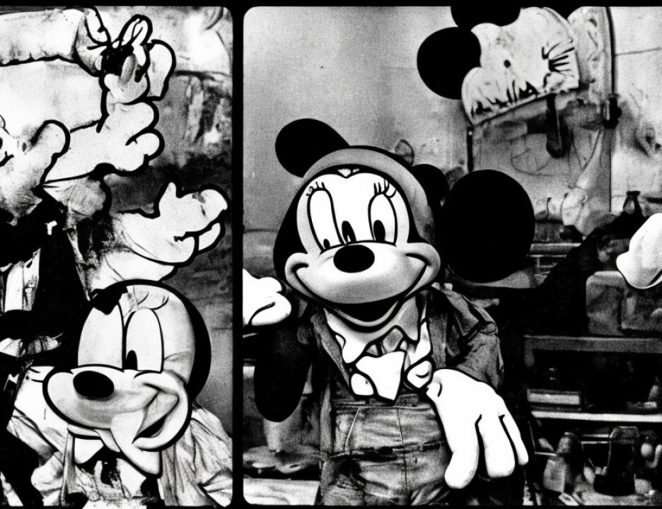

8 half of her face was considerably swollen, and so we sent the
9 jury home. The juror said that she had every hope that she
10 would be able to attend tomorrow.
11 There was no alternative. You weren't here. In any
12 event, I didn't think there would be an objection to excusing
13 the jury. It was clear that the juror could not continue.
14 There is every hope that she'll be able to come to court
15 tomorrow. But we're adjourned for the day insofar as the jury
16 is concerned, and in about ten minutes I'll resume in the
17 robing room with counsel.
18 MR. COHN: Your Honor, considering the balance of
19 what we have to consider in the robing room you might want to
20 inquire whether the clients wish to go back?
21 THE COURT: Why don't you inquire of your clients.
22 MR. COHN: Yes. Mr. Al-'Owhali would like to return.
23 THE COURT: If all of the defendants wish to return.
24 MR. BAUGH: Mr. Odeh would like to go back to the
25 MCC.
6490
1 MR. STERN: Khalfan Mohamed would like to return.
2 MR. DRATEL: Mr. El Hage would like to go back.
3 (Continued on next page)
4
5
6
7
8
9
10
11
12
13
14
15
16
17
18
19
20
21
22
23
24
25
6529
1 (Pages 6492 through 6528 sealed)
2 (In open court; jury not present)
3 THE COURT: Have the parties now had an opportunity
4 to review the preliminary instructions?
5 MR. GARCIA: Yes, your Honor.
6 THE COURT: I suppose one question which we should at
7 least articulate is the appropriateness of any preliminary
8 instructions at all. In McVeigh I think there weren't any.
9 MR. FITZGERALD: In McVeigh we had given your Honor
10 the preliminary instructions from McVeigh.
11 THE COURT: Wasn't it just two or three paragraphs?
12 MR. FITZGERALD: Yes.
13 THE COURT: It was very short. It was certainly not
14 as detailed as this. I'm inclined to favor having preliminary
15 instructions simply because this process is not something that
16 would be commonly known by a jury. Does anybody think we
17 should not have preliminary instructions?
18 MR. RUHNKE: No, your Honor.
19 MR. BAUGH: No, your Honor.
20 MR. RUHNKE: I think, your Honor, there are things
21 about the penalty phase in the federal death penalty case that
22 are just not within anyone's average knowledge. I think a
23 jury needs to have a preview of what's coming.
24 THE COURT: As a result of our conference thus far,
25 we've left unresolved the standards for determining the
6530
1 weighing of the factors. We've left unresolved what the
2 Eighth Circuit would call the mercy instruction, that is, the
3 instruction to the jury that regardless of their weighing of
4 the factors they need not find the death penalty.
5 We've left unresolved what, if anything, the Court
6 would say in the final instructions with respect to
7 deterrence. And we've left unresolved whether there must be
8 unanimity as to the gateway aggravators not being applicable.
9 Those four items.
10 MR. RUHNKE: I'm sorry. You dropped your voice at
11 the end of the last.
12 THE COURT: The unanimity as to if the jury finds
1